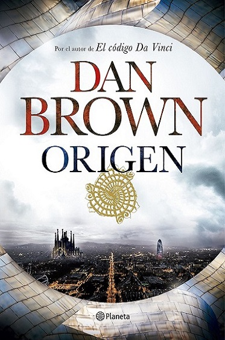

Origen
Dan Brown
Robert Langdon, profesor de simbología e iconografía religiosa de la universidad de
Harvard, acude al Museo Guggenheim Bilbao para asistir a un trascendental anuncio que «cambiará la faz
de la ciencia para siempre». El anfitrión de la velada es Edmond Kirsch, un joven multimillonario cuyos
visionarios inventos tecnológicos y audaces predicciones lo han convertido en una figura de renombre
mundial. Kirsch, uno de los alumnos más brillantes de Langdon años atrás, se dispone a revelar un
extraordinario descubrimiento que dará respuesta a las dos preguntas que han obsesionado a la humanidad
desde el principio de los tiempos. ¿DE DÓNDE VENIMOS? ¿ADÓNDE VAMOS? Al poco tiempo de comenzar la
presentación, meticulosamente orquestada por Edmond Kirsch y la directora del museo Ambra Vidal, estalla
el caos para asombro de cientos de invitados y millones de espectadores en todo el mundo. Ante la
inminente amenaza de que el valioso hallazgo se pierda para siempre, Langdon y Ambra deben huir
desesperadamente a Barcelona e iniciar una carrera contrarreloj para localizar la críptica contraseña
que les dará acceso al revolucionario secreto de Kirsch. Perseguidos por un atormentado y peligroso
enemigo, Langdon y Ambra descubrirán los episodios más oscuros de la Historia y del extremismo
religioso. Siguiendo un rastro de pistas compuesto por obras de arte moderno y enigmáticos símbolos,
tendrán pocas horas para intentar desvelar la fascinante investigación de Kirsch... y su sobrecogedora
revelación sobre el origen y el destino de la Humanidad. ORIGEN se desarrolla íntegramente en España.
Barcelona, Bilbao, Madrid y Sevilla son los escenarios principales en los que transcurre la nueva
aventura de Robert Langdon. De la mano del autor de El código Da Vinci, el lector recorrerá escenarios
como el Monasterio de Montserrat, la Casa Milà (La Pedrera), la Sagrada Familia, el Museo Guggenheim
Bilbao, el Palacio Real o la Catedral de Sevilla. Como ya sucedió con París en El código Da Vinci, con
Roma en Ángeles y demonios o con Florencia en Inferno, los escenarios de las novelas de Dan Brown
siempre han sido un elemento clave en sus tramas. Edición dedicada por Dan Brown.
Otros libros en Novela Negra/Thriller